Текст — зло
Портфолио и CV Алисы Толстовой
UX-писатель и человек-оркестр. 8 лет в IT (бигтех и кибербезопасность), 6 лет с пользователями. Люблю короткие продуктовые форматы: интерфейсы, инструкции, новости. Редактирую, перевожу RU<>EN, фотошоплю, верстаю, командую нейросетями. Опираюсь на исследования и метрики, но не жертвую качеством. Текст вижу как часть экрана, а экран как часть сценария.
Суперсила: встраиваться в ограничения. Криптонит: не могу делать бессмысленное.
Проектировала для агентов Поддержки ВКонтакте базу ответов и обучала ML‑модель, чтобы улучшить SL, не ухудшив CSAT. Обработала 100 000 вопросов, написала 1100 шаблонов. Веду канал про тексты и интерфейсы. Локализовала «Прометею» Алана Мура и «17 776» Джона Бойса.
Перехожу из поддержки в продукт, чтобы текстом направлять пользовательский путь. Делала кейсы для онлайн-игр и магазинов, промостраницы, формы и фильтры. Есть портфолио в Фигме.
Ищу проект, где пригодятся идеализм, занудство, грамотность на двух языках и широкий кругозор. Готова к гибриду в Петербурге или удалёнке.
Тут всё, чем я полезна: навыки, опыт, образование, личные и учебные проекты. Короткое резюме — на Хедхантере или в PDF (400 КБ).
Навыки
Английский C1 · Figma · Adobe Photoshop · HTML / CSS · Markdown · Tilda · Wordpress · Jira · Confluence · Microsoft Word / Excel / PowerPoint · Google Docs · ChatGPT · Инфостиль · ФФФ · Переговоры по Кемпу · JTBD · Философия пользы · Продуктовый подход
Опыт
UX-редактор Поддержки ВКонтакте
Апрель — ноябрь 2024
ВКонтакте — крупнейшая социальная сеть в России и СНГ (100 млн MAU). Её Поддержка существует с 2011 года и обрабатывает 12 000 обращений в день. Агенты Поддержки помогают с любыми вопросами, поэтому название пишут с заглавной буквы и без «тех-».
На повторяющиеся вопросы отвечают шаблонами, адаптируя их под ситуацию. От понятных шаблонов зависят KPI: положительные оценки (CSAT) и скорость (SL, AHT, длина диалога). Чтобы разгрузить агентов, создали базу верифицированных шаблонов. Благодаря ей:
- Каждый из 100+ агентов экономит 2–5 часов в неделю.
- Новички обучаются за месяц вместо полугода.
- Упрощается автоматизация: ML-модель, чат-бот.
- Пользователи получают быстрые, грамотные и достоверные ответы в единой тональности.
Мои задачи и результаты:
- Написала 1100+ шаблонов — половину базы.
- Поддерживала базу в Конфлюэнсе, следила за CSAT и реакцией пользователей, тестировала новые формулировки.
- Подготовила и согласовала с разработчиками описания 80+ продуктовых запусков.
Процесс и примеры
Шаблон — это текст до 2000 знаков, который отвечает на типовой вопрос о ВКонтакте. Я работала над ними так:
- Находила пробелы в базе — сама, по запросам агентов или их тимлидов.
- Исследовала, как отвечают сейчас, какие объяснения работают в мире пользователя.
- Изучала документацию: для некоторых бесед был строгий алгоритм, другие агент вёл свободно.
- Проверяла на себе инструкции, подбирала ссылки и иллюстрации.
- Если информации не хватало, обращалась к коллегам: спрашивала разработчиков, как всё устроено, методолога — как действовать агентам, пиар и юристов — чего не говорить, чтобы не прославиться.
- Принимала решение, которое поможет пользователю и не навредит платформе. Случалось сходить на пять созвонов и написать одну строчку.
- Составляла грамотный, связный и лёгкий текст в тональности Поддержки и по редполитике ВКонтакте.
Главный вызов — отказы. Как правило, люди пишут в Поддержку, когда у них что-то не получается. Если волшебной кнопки нет и у агента, он предлагает альтернативу. Если спрашивают о внутренней кухне — рассказывает, почему это секрет, и помогает чем может. Если нарушены правила — поясняет их, но не судит собеседника. Если же агент сам просит что-то сделать, то говорит зачем и предугадывает трудности. Я находила и шаблонила удачные приёмы — иногда c вариантами под разные настроения, иногда с прочерками под конкретику.
Шаблоны я публиковала в Конфлюэнсе, форматировала и упорядочивала, добавляла поисковые ключи. Обновляла, когда что-нибудь менялось — путь в интерфейсе, название партнёрского бренда. Следила, как работают мои тексты: если шаблон вызывал встречные вопросы или плохие оценки, я его переписывала.
Например, из ВКонтакте нельзя удалить сразу все материалы. Так сделано, чтобы пользователи не теряли школьные фото из-за взлома или собственной импульсивности. Вместо удаления постепенно разрабатывают архивацию, но людям-то нужно сейчас и желательно безвозвратно. Порадовать их мы не можем, так что тестируем разные объяснения и ищем наименее раздражающее.
А иногда для взаимопонимания достаточно исправить пару слов — начать со статуса запроса:
Чтобы мы быстрее приняли меры...
Аккаунт забрали на проверку. Чтобы ускорить...
Упростить:
Мы не можем воспроизвести проблему у себя, поэтому нужно убедиться, что дело не в настройках вашего устройства
На моём устройстве ошибка не повторяется, так что нужна ваша помощь в диагностике
Провести за руку:
Нажмите «Редактировать»
Нажмите на карандаш справа вверху
Смягчить:
Смотрите...
Дело в том, что...
Подчеркнуть пользу:
Для нашего общего удобства
Чтобы не возникло путаницы
Не провоцировать критику:
У нас запрещено...
Платформа не подходит для...
Не обнадёживать зря:
Обязательно постараюсь помочь
Подскажу один способ
Помимо базы, я готовила Поддержку к изменениям в продукте: изучала макеты новых функций, описания А / Б-тестов. Разбиралась, в чём польза обновления для аудитории и как теперь делать привычные вещи. Исходя из опыта на линии, предсказывала вопросы и согласовала ответы с разработчиками. Например, если продукт рассчитывал на рост подписок, мы готовились к вопросу, зачем навязываем контент. Так агенты правильно позиционировали нововведения и собирали нужную обратную связь: не «верните как было», а «эта функция полезна в таких-то сценариях».
Я работала без корректора и даже помогала коллегам ориентироваться в Грамоте, Розентале, Мильчине и редстандартах. Меня спрашивали, писать «VK» или «ВКонтакте», кавычить ли названия кнопок, нужна ли запятая после вводного слова, есть ли в словарях «лайк».
Важно было не делать лишнего: не писать ответы на вопросы, которых не задают, и не давать писать за меня тексты, которые не пригодятся. Для этого я анализировала выполненные задачи и вместе с лидом отлаживала процессы: когда включаться, какие вводные запрашивать, как выстроить цепочку согласования.
Коллеги обо мне в перформанс-ревью:
Высший пилотаж владения словом! Алиса постоянно генерирует оригинальные и нестандартные идеи, которые затем оперативно воплощает в шаблонах. Гуру дзена!
Сила в креативности, чётких текстах, способности найти оригинальное решение в замысловатой ситуации :)
Алиса умеет подмечать важные детали в любой ситуации, способна обрабатывать огромные объемы информации и выдавать по ним небольшие шедевры каждый раз в самые кратчайшие сроки.
Эксперт Поддержки
2023–2024
Обучала ML-модель, ускоряющую обработку вопросов в 5 раз.
Что за модель
До этого шаблоны искали вручную. Каждый агент помнил тысячи ответов — даже на вопрос, как включить бегающий банан на островке. Чтобы автоматически подбирать шаблоны из базы, создали ML-модель. Она не всегда угадывала, поэтому работала под надзором эксперта.
Я подтверждала действия модели в простых вопросах, а сложные распределяла по специалистам или отвечала вручную. Эксперт с моделью обрабатывал обращения за несколько секунд и помогал 500+ людям в день. Рядовые агенты сосредотачивались на нишевых вопросах, Поддержка экономила человекочасы, а пользователи получали помощь быстрее.
Мне нравилось работать быстро и учить машину. Но я скучала по текстам, поэтому стала помогать редактору с недостающими шаблонами. Проявила себя и перешла в редакцию.
Старший агент Поддержки
2021–2023
Продолжала работать с пользователями, а также помогала другим агентам и смежным отделам:
- Наставничество: разобрала с новичками 2000+ кейсов — проверяла их решения, подсказывала, учила инструментам Поддержки.
- Контроль качества: дала оценку и рекомендации 25 агентам.
- Процессы Поддержки: вывела из личек поток обращений (100+ в день) и ускорила их закрытие с нескольких суток до нескольких часов.
- Рубрика о грамотности в сообществе для агентов: составила план, написала 8 выпусков.
- SMM: отвечала на сообщения и комментарии в 3 официальных пабликах, включая vk.com/vk.
- UX-исследование вкладки «Меню» в приложении ВКонтакте: обработала интервью по методу FISH.
Про качество и рубрику подробнее
Контроль качества в Поддержке называли чтениями. Как чтец, я изучала ответы агента и находила зоны роста. Оценивала знания, тональность, грамотность, готовность к новой роли. Научилась очищать обратную связь от эмоций и личных оценок, выбирать формат — зеркальный, развивающий или корректирующий. Благодаря мне новички оставались в Поддержке, а опытные агенты шли на повышение.
Для внутреннего сообщества Поддержки я вела рубрику о грамотности «Оптека». Она понадобилась, потому что агенты делали одинаковые ошибки — например, писали «функционал» в значении «возможность». Я составила контент-план на год, распределила обязанности и задала стиль публикаций. Предложила систему вовлечения: объясняем правило на мемах про страдающее Средневековье, даём тест с забавными вопросами, отправляем искать примеры в своих тикетах, награждаем баллами геймификации. План выполнили, хотя сама я написала только 8 выпусков. Агенты участвовали с удовольствием, «функционалов» в ответах стало вдвое меньше.
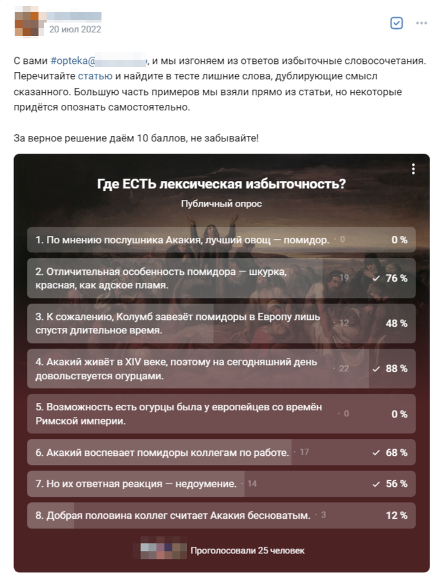
Тест про лексическую избыточность. Акакий — постоянный герой рубрики
Агент Поддержки
2020–2021
Помогала пользователям в чате — ответила на 100 000 вопросов, вошла в топ-10 по CSAT и качеству ответов.
Почему это круто
Агент Поддержки ВКонтакте в то время — универсальный линейный специалист, евангелист культовой соцсети и связной между пользователем и продуктом.
Я и другие агенты обрабатывали по 150 обращений в день:
- Рассказывали о возможностях ВКонтакте. Это самые разные вопросы: кого-то интересовало, как правильно размещать рекламу, а кого-то — почему от неё не избавиться.
- Собирали обратную связь для разработчиков. Объясняли, зачем нужны обновления и эксперименты, почему не все пожелания воплощают.
- Диагностировали неполадки и регистрировали баги. До сих пор держу на компьютере шесть браузеров.
- Помогали восстановить аккаунт и контент, снять ограничения, разобраться в причине блокировки.
- По жалобам удаляли нарушения либо объясняли позицию площадки. Советовались с модерацией.
- Делились опытом использования ВКонтакте: среди агентов были администраторы сообществ, авторы, продавцы и просто старожилы платформы.
- Обсуждали интернет в целом: что такое браузер, капча и 2ФА, как прокачаться в игре, какой сериал посмотреть.
- Беседовали на любые другие темы, как по телефону доверия.
Главный навык агента — самоорганизация. Мы работали по свободному графику, сами следили за новостями, писали шаблоны и учились друг у друга. Приходилось модерировать жестокие материалы и успокаивать пользователей. Нам писали люди всех возрастов, взглядов и культур — это интересно, но порой сложно.
А второй навык агента — находчивость:
- Незрячий пользователь не мог убрать пункт из меню. Я установила себе его скринридер и обнаружила, что тот не опознаёт галочку в настройках. Подсказала пользователю последовательность клавиш, а коллегам сообщила о недоработке.
- Пользователь не мог смириться с потерей аккаунта. По его словам, там не было ничего ценного, кроме музыки, которую он хорошо помнил. Подобрала аналогию: слесарь не согласится вскрыть замок от квартиры по описанию интерьера.
- Когда пользователь открывал ВКонтакте, то вместо ленты или профиля видел мем про баг. Догадалась, что он заходит на сайт через закладки, а туда случайно добавил злополучный мем. Вопрос решился за 6 минут и 1 реплику.
- Пользователь считал, что мы рассекретили его телефон, так как указывал его только при регистрации ВКонтакте. Поискала на форумах и нашла старое объявление о потерявшейся собаке с телефоном и ссылкой на профиль.
- Пользователя смущала кнопка «Мой QR-код». Объяснила, что его не хотели обидеть, а разработчиков убедила, что «QR-код профиля» лучше.
- При смене настроек система попросила ввести «проходное слово от вашего досье». Пользователь был озадачен. Подсказала, что в шуточном советском языке интерфейса так называется пароль.
- Пользователь с ником «Иисус Христос» спросил, как правильно медитировать. Пришлось сказать!
Мои ответы в паблике Поддержки:
Корректор и переводчик
2017–2019
Работала внештатным корректором в издательствах «Панорама ТВ», «Городские справочники», «Лань». Это был олдскул с гранками и корректорскими знаками. Вычитала 20+ книг и 50+ журналов.
Переводила:
- тексты по разработке, тестированию, криптовалютам;
- по психологии, психиатрии, педагогике;
- фильмы, сериалы — субтитры и под озвучку.
Ютуб-канал в переводе на английский. Я готовила реплики к дубляжу, чтобы канал получил международную аудиторию. Самые популярные видео залетели на 1 млн просмотров.
Статьи по IT в переводе с английского на Медиуме
Контент-менеджер в Digital Security
2011–2016
Digital Security — B2B-аудитор информационной безопасности, исследовательский центр, разработчик системы мониторинга ERPScan и организатор конференции ZeroNights. Среди клиентов: Сбер, Альфа‑Банк, Газпром, Балтика, SAP SE.
Я совмещала роли контент-менеджера, переводчика, корректора и помощника руководителя. Компания в это время выросла с 20 до 70 человек, открыла офис в Москве и вышла на международный рынок.
Конкретнее
Через меня проходили все тексты: клиентские, маркетинговые и экспертные. Нужно было быстро осваивать инструменты под задачу, самостоятельно гуглить, чем межсайтовая подделка запросов отличается от межсайтового скриптинга, и ничего не забывать.
Для клиентов я готовила презентации, коммерческие предложения, отчёты. Переписывалась и созванивалась на английском с SAP SE и другими зарубежными заказчиками.
Для маркетинга — писала и рассылала пресс-релизы, договаривалась об участии в выставках и конкурсах. Наполняла корпоративные сайты на двух языках: DSec.ru, ERPScan.ru и ERPScan.com, ZeroNights.ru и ZeroNights.org. Публиковала новости, репостила в Твитер, обновляла услуги и портфолио, брифовала дизайнера и вебмастера. Вела блог о банковской безопасности PCIDSS.ru: за год перевела с английского 50+ заметок и пересказала 200+ русскоязычных. Работала в 1С‑Битриксе, Вордпрессе, Модэксе и самописной CMS.
Исследователям я помогала выступать и публиковаться. Это белые хакеры — они ищут уязвимости, оповещают разработчиков и делятся опытом на отраслевых конференциях. Ко мне обращались за вычиткой и переводом презентаций и статей, с любыми вопросами по русскому и английскому. Так съездили на 50+ зарубежных мероприятий: BlackHat, Defcon, HITB.
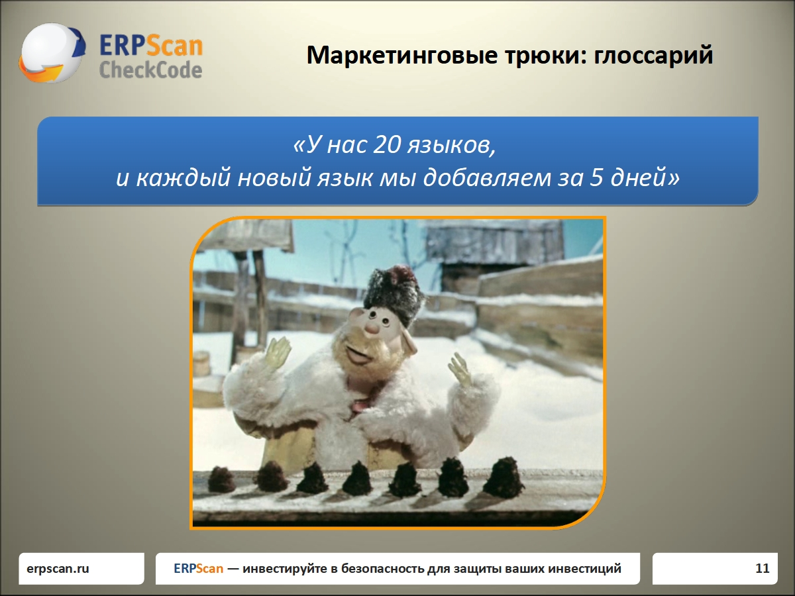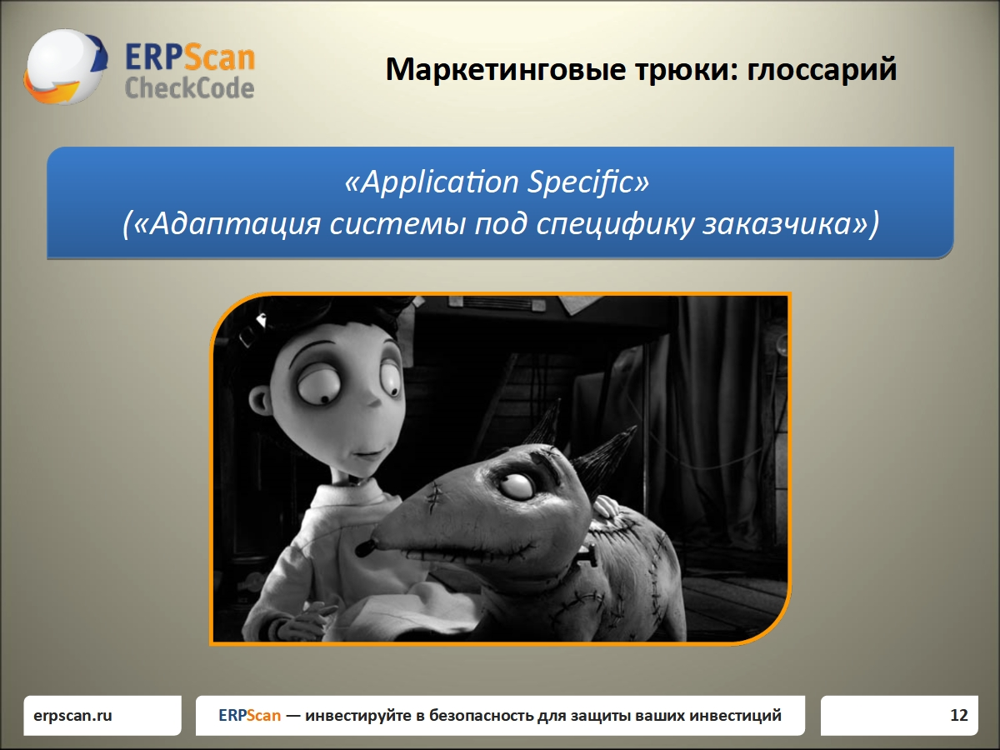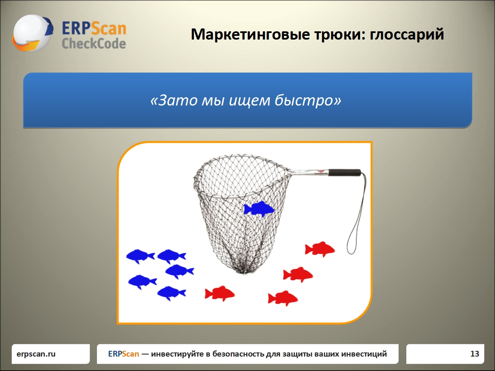
Вот такие презентации делала
А ещё раньше я работала администратором в отеле, секретарём в дисконтной системе, литературным редактором в детском издательстве-стартапе и чуть-чуть в активных продажах. Так что умею решать проблемы не только в интернете.
Образование
Школа редакторов Бюро Горбунова
Январь — август 2025
Прошла две ступени — теорию и учебную практику. Изучала коммерческую редактуру, интерфейсы, типографику и вёрстку, управление и переговоры.
Сертификат школы
Кафедра эргономики и инженерной психологии СПбГУ
2006–2013
Кафедра занималась психологией труда, рекламы и человеко-компьютерного взаимодействия. Я изучала законы гештальта и когнитивные искажения, психотерапию и управленческое консультирование, психолингвистику, проведение исследований. Защитила диплом «Факторы отношения к рекламе программных продуктов».
Про диплом
Я исследовала восприятие рекламных текстов на примере решений для ИБ, с которыми тогда работала. У испытуемых измерила стили обучения по Хани и Мамфорду и Большую пятёрку личностных черт. Далее попросила оценить тексты по ряду шкал специально разработанного семантического дифференциала. И подсчитала, как всё это связано.
Подтвердилось, что идеальной рекламы нет, но разные люди ищут в ней прагматическую, социальную либо эмоциональную пользу. Различия заметны даже на узкоспециализированном B2B-продукте.
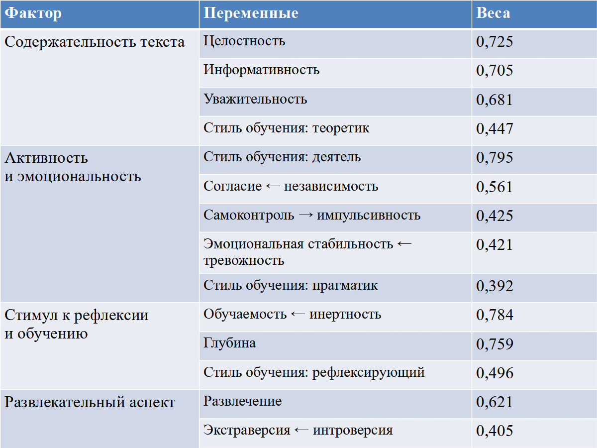
Связь оценки текста с личностными чертами и стилями обучения
Курсы и тренинги
| 2025 |
Текст в интерфейсе |
Ира Моторина |
|
Методы исследования аудитории |
Bang Bang Education |
|
Проектирование клиентского и пользовательского опыта |
Bang Bang Education |
|
Как писать просто, понятно и для интерфейсов |
Кира Калимуллина |
| 2024 |
Как окружающие слышат нас: учимся доносить свои мысли и реагировать на комментарии |
Development Academy |
|
Как обучать других и передавать свой опыт |
Development Academy |
|
Как отвечать на сложные и неудобные вопросы |
Синхронизация |
| 2022 |
Управляемый конфликт в команде |
T&D Technologies |
|
Обратная связь. Эффективное развитие работы команды |
T&D Technologies |
|
KPI и OKR — как и что |
T&D Technologies |
|
Умные коммуникации: влияние и убеждение |
Sellwell |
| 2018 |
Обучение на асессора |
Яндекс |
| 2013 |
Решение сложных рабочих ситуаций |
Стратоплан |
|
Управленческие инструменты: системный менеджмент на пальцах |
Стратоплан |
Личные проекты
Художественный перевод
Перевожу комиксы и не только. Всё делаю сама: одомашниваю шутки, составляю глоссарий, подбираю шрифты, определяюсь с тире и кавычками, рисую звуки, вывески и газетные вырезки, заливаю на сайт и пишу подводки для соцсетей.
Для меня это возможность затащить большой проект под ключ, а для читателей — знакомство с классическими и просто крутыми произведениями, которые не переводились официально.
Самая старая работа — «Нейрокомикс» Тимоти Лири (2015). Перевод напечатан и до сих пор продаётся. Самая крупная — «Прометея» Алана Мура (2018–2024). Это больше тысячи страниц графики, прозы и стихов.
Все мои переводы
Игровое
Играю в браузерные игры-симуляторы: Годвилль, Flight Rising, Lioden. Торгую на игровом рынке, держу виртуальные питомники, договариваюсь и сотрудничаю.
Я люблю разбираться в сложных механиках и помогать с ними другим. Для этого пишу гайды на английском:
Канал «Апрельскую беспокоят интерфейсы»
Публикую в нём мелкие перевёрстки и наблюдения:
Портфолио UX‑редактора
Об опыте в Поддержке я рассказала что могла, но большая часть редактуры под NDA. Поэтому здесь учебные и конкурсные работы за последний год — пусть они покажут, как я проектирую, верстаю и пишу для продукта.
Новость с ресайзами, настройки и онбординг
Задание из книги Кирилла Егерева «Этой кнопке нужен текст». Вымышленная игровая студия запускает новый раздел магазина — нужно рассказать о нём пользователям. Составила понимание задачи, проработала корнер‑кейсы, написала пакет продуктовых текстов и сверстала макеты.
Всё в Фигме
Редизайн поисковых фильтров
В игре Flight Rising неудобная форма поиска. Проанализировала отзывы игроков, сформулировала JTBD, спроектировала новый интерфейс.
Форма и подробности в Фигме
Интерфейс мобильного приложения
Учебное задание от Ильи Бирмана. Ситуация: приходишь на почту за посылкой, нужно вписать паспортные данные, а паспорт дома забыл. Решение: приложение для сканирования, распознавания и поиска значащих полей документов. Спроектировала интерфейс приложения «Анкетус».
Анкетус в Фигме
Редактура интерфейса
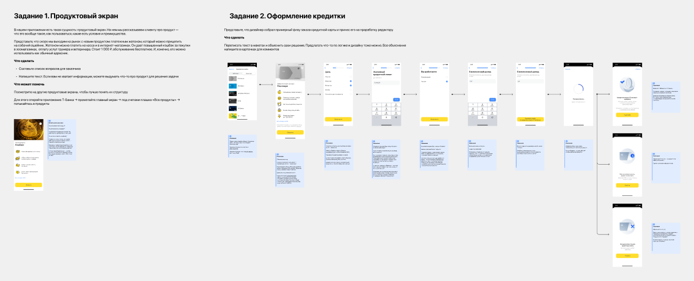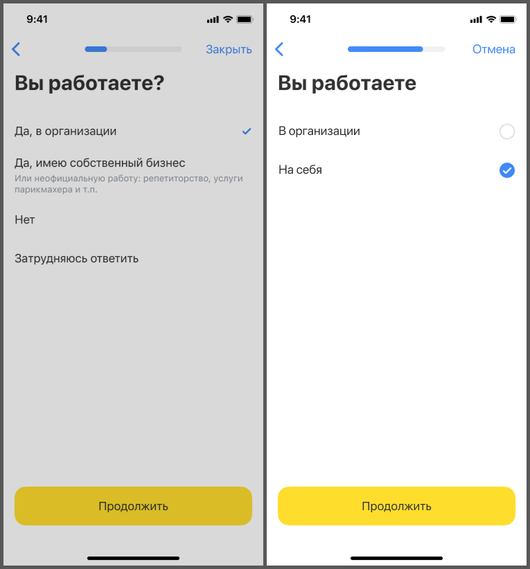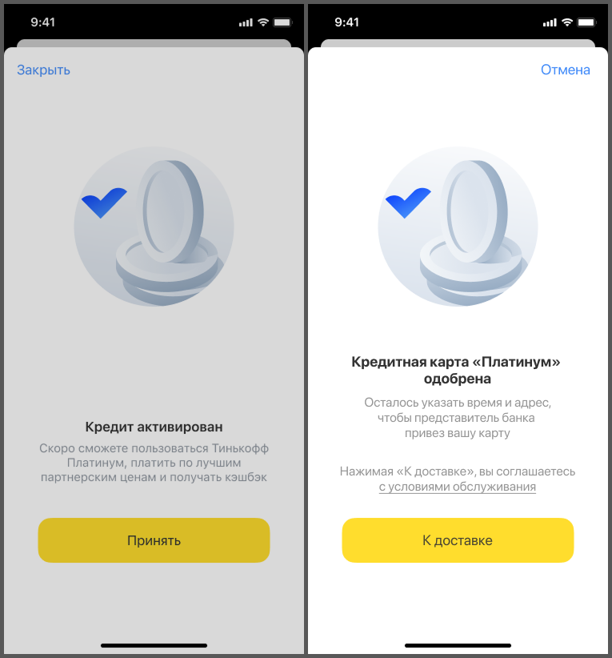
Тестовое задание в Т-Банк: улучшить интерфейс заказа карты. Применила редполитику, облегчила пользовательский путь, исправила логику. Прошла на собеседование.
Кусочек, так как задания нет в открытом доступе.
Перевёрстка бланка
Конкурс от Игоря Штанга: улучшить вёрстку бланка из оптики. Упростила и вычитала текст, систематизировала, добавила чекбоксы.
Бланк и подробности в Фигме
Перевод и перевёрстка плаката
Кейт Моран из NN/g разработала четыре шкалы для измерения тональности продукта и упаковала их в плакат. Однако устоявшегося русского перевода нет, а плакат плохо свёрстан. Перевела, переверстала.
Плакат «Четыре измерения тональности» в Фигме
Пуши
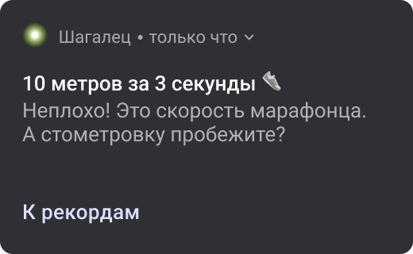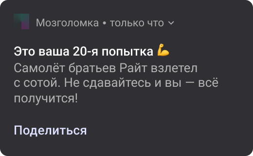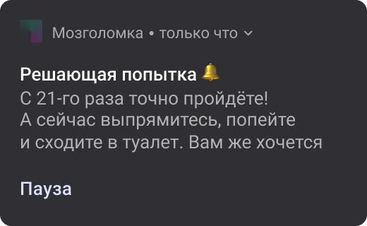
Конкурс от канала «Тут дел на 5 минут»:
- Спортивное приложение засчитало прогулку до холодильника как новый рекорд по бегу. Сделай пуш с этим результатом.
- Игрок проигрывает в онлайн-игре 20 раз подряд на одном уровне. Придумай мотивационный пуш.
Придумала текст и сверстала мокапы.
Промостраницы
Учебное задание от Максима Ильяхова: продать грувбокс Akai Force тем, у кого нет компьютера. Написала и сверстала промостраницу.
Макет промостраницы Akai Force (PNG, 5 МБ)
Учебное задание от Михаила Нозика: рассказать о вымышленной коллекции меховых шапок. Продумала коллекцию, написала и сверстала промостраницу.
Макет промостраницы Мурнорки (PNG, 4 МБ)
Статья
Собрала материал, написала текст, нарисовала иллюстрации, сверстала в HTML. Получилась статья «Как против нас используют эффект избегания потерь».
Отзыв Максима Ильяхова:
Интересно, подробно, хорошо проиллюстрировано. Нравится.
Редактура текста
Было
Этот жилой комплекс является уникальным сочетанием современных инноваций и высокого уровня комфорта для жизни. В нём предусмотрены передовые инженерные системы, включая систему очистки воды до питьевого качества, высокоэффективную центральную вентиляцию с многоступенчатой системой фильтрации воздуха, а также новейшие технологии климат-контроля, которые позволяют жильцам чувствовать комфорт при любых погодных условиях. Особое внимание уделено оформлению входных групп, каждая из которых разработана в соответствии с индивидуальным дизайнерским проектом. Отделка холлов и зон ожидания выполнена из натуральных, долговечных и эстетически приятных материалов. Для удобства жителей предусмотрен подземный паркинг, охрана территории на круглосуточной основе, а также высококлассный консьерж-сервис, который доступен в любое время суток.
Стало
Передовые инженерные системы обеспечивают комфорт в любую погоду. В квартирах не холодно зимой и не жарко летом. Очищенным воздухом легко дышать, а воду из крана можно пить.
У каждого подъезда индивидуальный дизайн. Холлы отделаны натуральным песчаником и массивом сосны — здесь приятно проходить каждый день.
Охрана и консьерж дежурят круглосуточно. Машины в подземном паркинге защищены от осадков и не занимают место во дворе.
Было
Под техническими практиками, которые позволяют сделать программное обеспечение качественным, мы подразумеваем набор формальных и неформальных правил. Юмористический принцип 90-90 гласит, что последние 10% кода занимают столько же времени, сколько и первые 90%. На первый взгляд складывается впечатление, что работа завершена, но заблокирована единственным заключительным действием, чтобы этот блок преодолеть, требуется очень много времени, так, на последние 10% разработки мы тратим 90% времени, но и на первую часть работы мы тратим 90% времени, что в сумме дает нам 180% от запланированного времени. Это приводит к тому, что проект задерживается практически в два раза. Технические практики призваны облегчить и упростить оставшиеся 10% процентов разработки.
Качество программного продукта содержит две составляющие: функциональное качество продукта говорит о том, насколько наше ПО соответствует спецификации и насколько наш продукт способен конкурировать с аналогами на рынке — произвели ли мы правильный продукт или нет. Структурное качество показывает насколько наше ПО соответствует нефункциональным требованиям: легко ли поддерживать, итерационно поставлять изменения, масштабировать, насколько им приятно пользоваться и многое другое.
Большинство наших проектов технически очень сложные и требуют невероятной самодисциплины, чтобы экосистема итерационно и успешно могла развиваться на протяжении долгих лет (5+), поэтому мы в основном будем говорить про структурное качество.
Стало
Отладка затягивает разработку почти вдвое. Том Каргилл из Bell Labs сформулировал юмористический принцип: «На первые 90% кода уходит 90% времени, а на оставшиеся 10% — ещё 90% запланированного времени разработки». Перед вами курс о том, как запускать качественные продукты в срок.
Качество бывает функциональным и структурным. Функциональное — это когда продукт соответствует спецификации и конкурентоспособен. А структурное — когда его легко использовать, поддерживать, обновлять и масштабировать.
Если продукт технически сложный, функционального качества недостаточно. Такие проекты мы развиваем итерациями: за несколько месяцев создаём рабочий продукт и не менее пяти лет совершенствуем его. Это требует высокого структурного качества. Поговорим о технических практиках, которые помогают его достичь.
HTML-вёрстка этой страницы тоже моя. Оцените, как адаптируется под окно!


{kind=link}